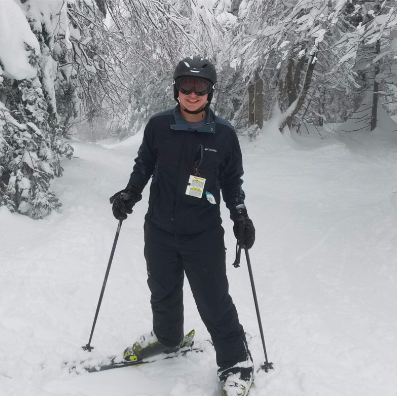

Jordan Kruse

What is this place?
This website was coded and designed by myself as a personal project in order to learn how to code HTML/CSS, and about web design and development. The primary purpose of this site is to act as a portfolio for potential employers where I can documents and display my various projects and interests, as well as showing a bit about myself. I will be constantly updating this site as I learn more about code or have other projects to display. Learn more about the development of this site here!
About me
- Currently Attending Penn State
- Pursing degrees in Nuclear and Mechanical Engineering
- Highly interested in fields involving Spaceflight, Power Generation, and Fusion
- Hobbies and interests include Computer Hardware and Software, Skiing, Biking, and Hiking.
Why Hire Me?
- Highly Motivated - Having such an interest in engineering, I am very excited and interested to have the chance to work on real work issues, and will show a great work ethic in doing so.
- Team Player - I work very well with others and always work with the success of the team in mind. I have experience as both a team member and a team leader, and am always seeking new opportunities to improve on my leadership and teamworking skills.
- Fast Learner - I can quickly and effectively learn new skills and ideas, especially those that I have a great interest in!
- Not yet convinced? Email me at jrkruse26@gmail.com for more information such as a formal resume or transcript, or just to speak with me!
Connect With Me